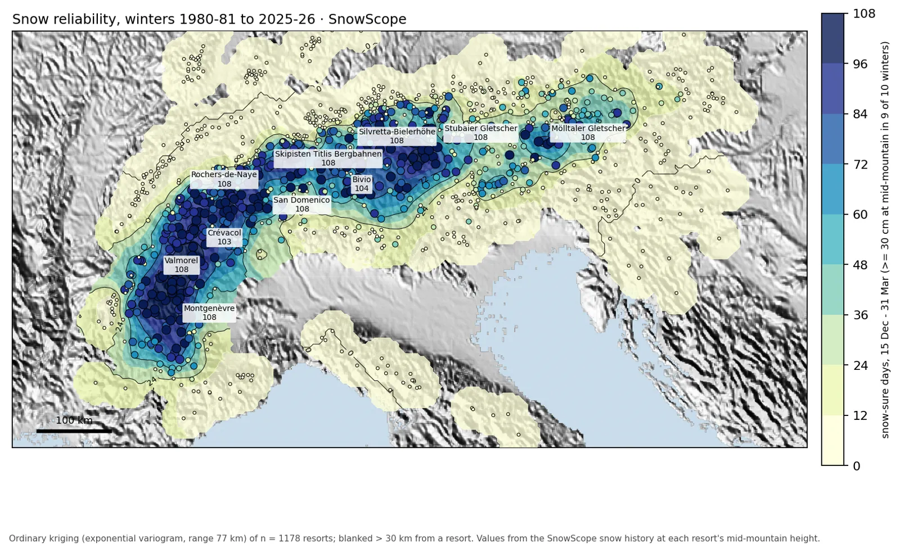
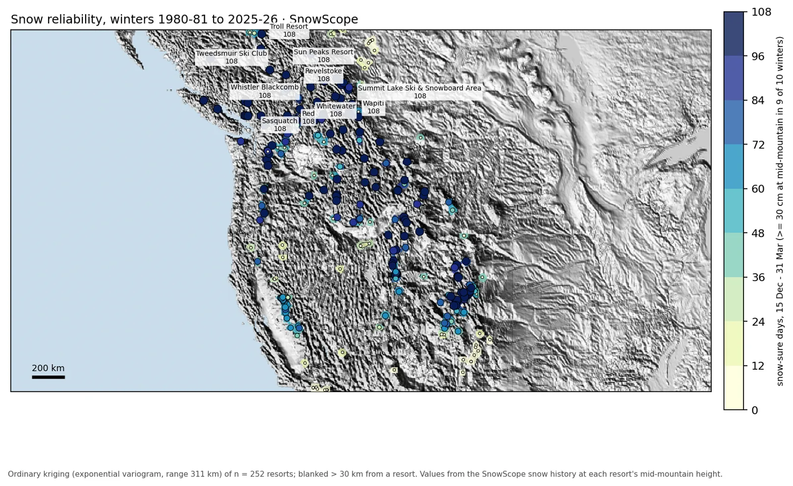

Where to ski this winter 2026/27: snow reliability by region (Alps, Pyrenees, North America, Atlas)
Which resorts almost always have snow? We looked at 46 past winters (1980-81–2025-26) for every resort on our map and counted the days from 15 December to 31 March with at least 30 cm at mid-mountain in 9 winters out of 10.
See the live snow forecast for Kaunertaler Gletscher in the SnowScope appSnow depth, powder alerts and the 3D map, free.
How we measure snow reliability
The core season has 108 days. A resort with 108 'snow-sure days' had at least 30 cm at mid-mountain on every one of them in 9 of 10 winters. We also count 'typical days': at least 30 cm in half of the winters. The values come from our snow history (a model of past winters, corrected for height), not from resort reports.

Alps
In the Alps, 211 of 1178 resorts have 90 or more snow-sure days; the middle resort has 0. The most reliable: Kaunertaler Gletscher (108), Jungfraujoch Snow Fun Park (108), La Grave (108), Mölltaler Gletscher (108).
The usual snow at mid-mountain peaks in February (48 cm for the middle resort). Typical days with 30 cm or more: 92 for the middle resort.

Pyrenees
In the Pyrenees, 0 of 53 resorts have 90 or more snow-sure days; the middle resort has 0. The most reliable: Ordino-Arcalis (64), Cauterets Cirque du Lys (39), Formigal (28), Gourette (27).
The usual snow at mid-mountain peaks in February (49 cm for the middle resort). Typical days with 30 cm or more: 67 for the middle resort.
US West
In the US West, 77 of 195 resorts have 90 or more snow-sure days; the middle resort has 72. The most reliable: Mt. Bachelor (108), Crystal Mountain (108), Stevens Pass (108), Mt Baker (108).
The usual snow at mid-mountain peaks in March (49 in (124 cm) for the middle resort). Typical days with 12 in (30 cm) or more: 108 for the middle resort.
Western Canada
In Western Canada, 38 of 57 resorts have 90 or more snow-sure days; the middle resort has 108. The most reliable: Sasquatch (108), Whistler Blackcomb (108), Mount Cain Alpine Park (108), Ski Callaghan (108).
The usual snow at mid-mountain peaks in March (92 cm for the middle resort). Typical days with 30 cm or more: 108 for the middle resort.
US Northeast
In the US Northeast, 0 of 111 resorts have 90 or more snow-sure days; the middle resort has 0. The most reliable: Saddleback Mountain (79), Ski Eldorado (78), Wildcat Mountain (76), Bretton Woods (55).
The usual snow at mid-mountain peaks in February (16 in (41 cm) for the middle resort). Typical days with 12 in (30 cm) or more: 63 for the middle resort.
Atlas (Morocco)
In the Atlas (Morocco), 0 of 3 resorts have 90 or more snow-sure days; the middle resort has 0. The most reliable: Oukaimden (0), Habri (0).
The usual snow at mid-mountain peaks in December (0 cm for the middle resort). Typical days with 30 cm or more: 0 for the middle resort.
Tips for skiers
- Book early-season trips (before Christmas) only at snow-sure resorts: high, with glaciers or north-facing slopes.
- February is the safest month in most regions; March often keeps the deepest snow at the top.
- Lower, cheaper resorts can be excellent in a good winter: watch the live map and book late.
- Snow reliability is not a promise: check the official avalanche bulletin before any off-piste day.
About these numbers
Resort snow depths are the deepest snow on the resort's upper slopes from the SnowScope snow model (about 1 km, run of 3 November); they are estimates for an area, not a measurement at one point. Station values are measurements on the date shown. Forecasts can change. Always read the official avalanche bulletin before going off-piste.
Official avalanche bulletins: EAWS (Europe) · avalanche.org (US) · Avalanche Canada
Cite this report
For research, teaching or the press: the numbers and charts are free to reuse under CC BY 4.0 with this citation.
SnowScope (2026), Where to ski this winter 2026/27: snow reliability by region (Alps, Pyrenees, North America, Atlas), https://snowscope.app/blog/en/2026/11/where-to-ski-winter-2026-27-snow-reliability-by-region.html, accessed 2026-11-03
SnowScope (Atlas Labs). (2026, November 3). Where to ski this winter 2026/27: snow reliability by region (Alps, Pyrenees, North America, Atlas). SnowScope snow reports. https://snowscope.app/blog/en/2026/11/where-to-ski-winter-2026-27-snow-reliability-by-region.html
BibTeX
@misc{snowscope2026wheretoskiwinter202627sn,
author = {{SnowScope (Atlas Labs)}},
title = {Where to ski this winter 2026/27: snow reliability by region (Alps, Pyrenees, North America, Atlas)},
year = {2026},
month = nov,
howpublished = {\url{https://snowscope.app/blog/en/2026/11/where-to-ski-winter-2026-27-snow-reliability-by-region.html}},
note = {Published 2026-11-03 16:34 UTC; accessed 2026-11-03}
}· CC BY 4.0 · Methods, data and tools →
Kaunertaler Gletscher: snow and temperature by height, this winter vs last (tools) →
More snow reports

Our daily table of the resorts with the most new snow forecast for the next 24 hours and until 11 November, in Europe, Morocco and North America, …

Our daily table of the resorts with the most new snow forecast for the next 24 hours and until 9 November, in Europe, Morocco and North America, with …

Our daily table of the resorts with the most new snow forecast for the next 24 hours and until 6 November, in Europe, Morocco and North America, with …